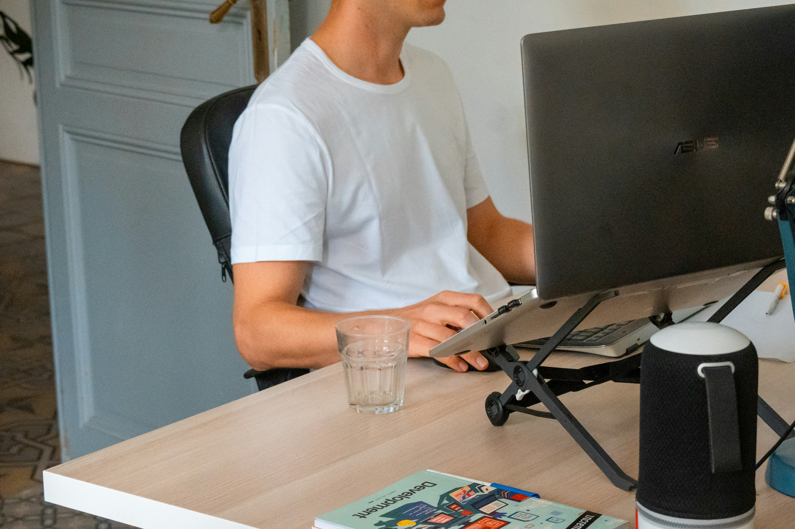

Un poste de travail bien aménagé améliore le confort, la
concentration et réduit les risques de fatigue ou de douleurs.
Lumière, acoustique, circulation, mobilier : découvrez les
recommandations essentielles pour optimiser votre espace de travail
et préserver votre santé au quotidien.

Pourquoi aménager correctement son espace de travail ?
Un espace de travail fonctionnel influence directement la qualité de
vie au travail. Au-delà du mobilier, l’environnement doit garantir :
le respect de la confidentialité et une acoustique maîtrisée ;
un agencement pratique, fluide et sécurisant ;
une luminosité confortable, naturelle si possible ;
la possibilité de personnaliser son poste ;
une liberté de mouvement suffisante pour travailler sans gêne.
L’ergonomie repose sur trois piliers : l’analyse du travail réel,
les connaissances ergonomiques actuelles et la participation active
des employés.
De combien d’espace a-t-on besoin pour travailler ?
La surface idéale dépend principalement des missions quotidiennes.
Les postes orientés réunions ou déplacements nécessitent moins
d’espace. À l’inverse, un travail impliquant recherches, écriture ou
matériel demande une surface plus importante.
L’équité entre collègues doit rester respectée : sauf postes à
responsabilité, l’espace attribué doit être cohérent d’une personne
à l’autre.
L’éclairage
La lumière naturelle est idéale : elle réduit l’éblouissement,
améliore le confort visuel et limite la fatigue mentale. Les postes
situés à moins de 6 mètres d’une fenêtre en profitent pleinement.
éviter les éclairages zénithaux sauf si la hauteur sous plafond le
permet ;
privilégier une exposition nord ;
installer stores ou pare-soleil si besoin.
Une vue dégagée vers l’extérieur est recommandée pour diminuer la
fatigue visuelle et améliorer le bien-être mental.
Flexibilité des locaux & acoustique
Les cloisons démontables et le passage des câbles en faux plancher
facilitent l’adaptation des espaces. Une isolation phonique minimale
de 40 dBA garantit un environnement calme et confortable.
Espace optimal par personne
La norme recommande 10 m² par personne, ou 15 m²
pour les activités très verbales (centres d’appels). Les bureaux
partagés fonctionnent mieux en petits groupes de 2 à 5 personnes, et
jusqu’à 10 en open space.
Accès et circulation
Les couloirs doivent mesurer au moins 1,5 mètre de largeur pour
permettre une circulation fluide. L’accessibilité pour les personnes
à mobilité réduite doit être prise en compte.
Ventilation et qualité de l’air
La température idéale en hiver est d’environ 22°C. La ventilation
doit être silencieuse (moins de 40 dBA) et assurer un renouvellement
de 25 m³/h par occupant.
Aménagement intérieur
Chaque salarié doit pouvoir personnaliser son espace grâce à un
éclairage individuel, des cloisons décoratives et un plan de travail
adapté. Les règles recommandées :
180 cm de passage derrière le bureau ;
80 cm dégagés devant le poste ;
éclairage homogène de 300 lux ;
plafond acoustique et moquette antistatique ;
mobilier clair, non brillant ;
plan de travail ≥ 80 cm de profondeur et 120 cm de largeur ;
siège réglable de 37 à 53 cm, sur 5 branches.
Astuce : alterner assis et debout
Pour toute activité sur écran, un bureau réglable en hauteur permet
d’alterner les positions. Cette variation réduit la fatigue,
améliore la circulation et limite les effets de la sédentarité.
À vous de jouer !
Un espace de travail bien pensé améliore la productivité, la santé
et le bien-être. Prenez quelques minutes pour observer votre
environnement et identifier ce que vous pouvez améliorer dès
aujourd’hui.